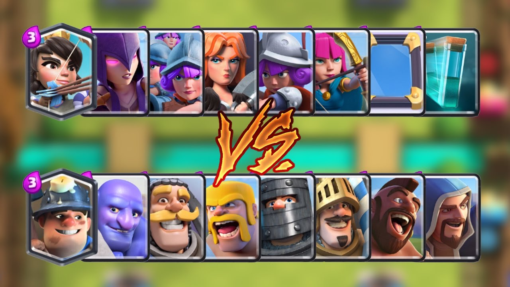
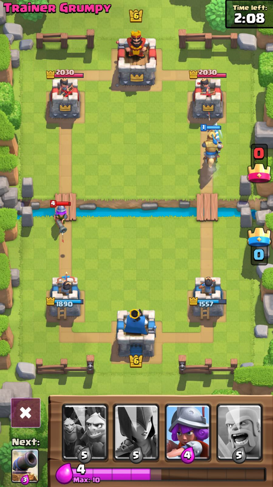

Game Play
 Although similar in terms of graphics, Clash Royale and Clash of Clans 2 share little in common when it comes to strategy. There are many similar fighters from Clash of Clans in Clash Royale, for example, balloons and giants but they have different appearances. Clash Royaleis a mixture of tower defense and strategy. Fighting is done with a card(s) and the center is divided by a river. The fighters can get to the other side via two bridges (one left and one right). Each player has three towers which must be defended in order to win. If the main tower (King's Tower) is destroyed, the game is lost.
For more information, click here!
Alan Fung 1-2